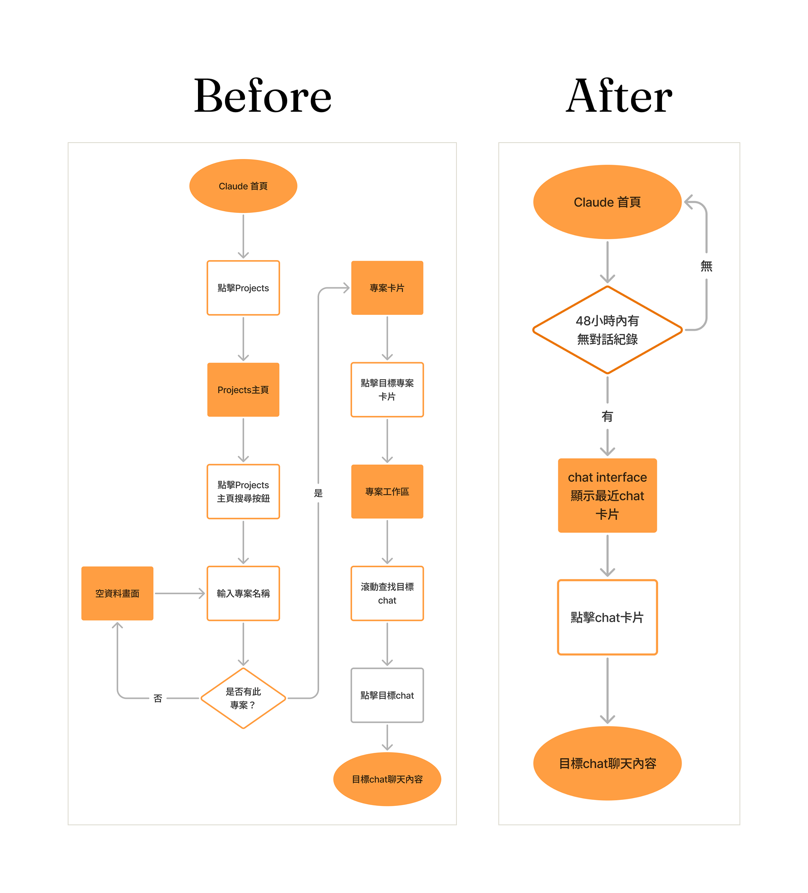
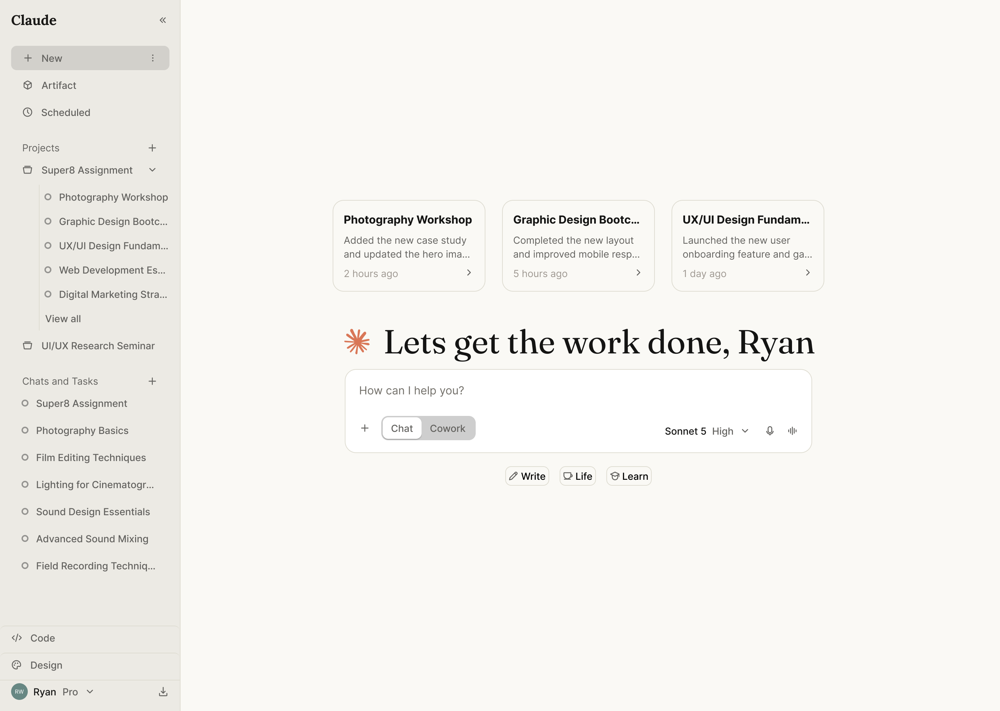
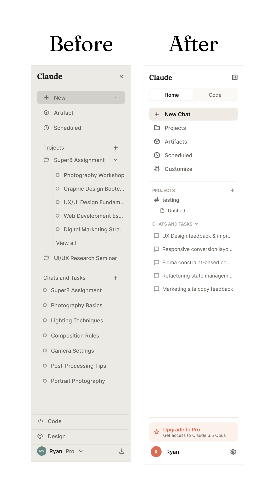
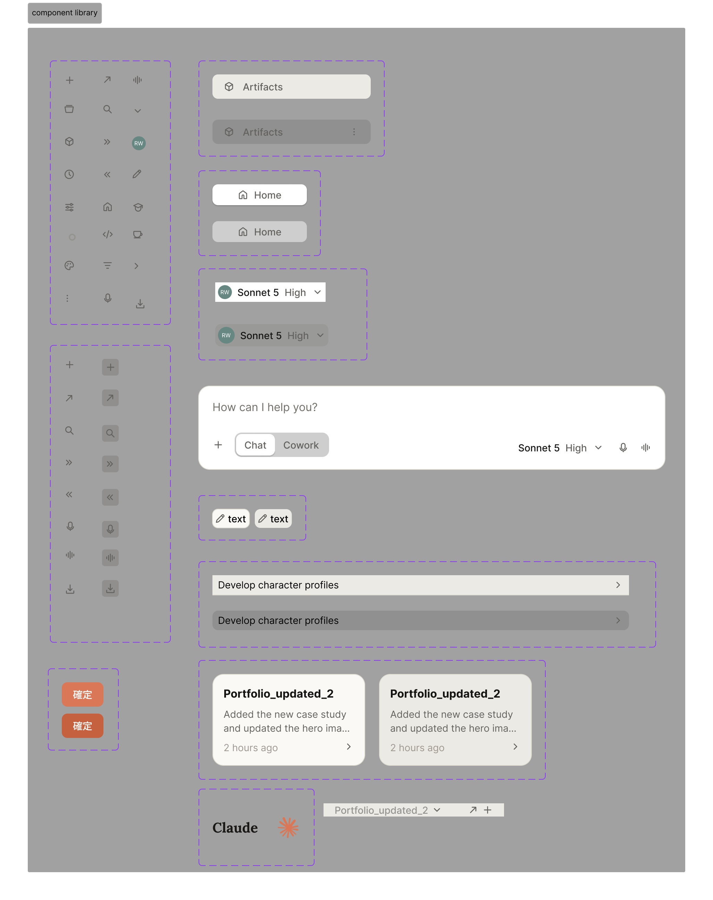

如果要讓使用者更容易開始一個任務，你會改善什麼？
觀察對象：Claude.ai 網頁版（desktop web），登入後 Chat 頁面。作業內容涵蓋 Problem Framing、Design Proposal 與 AI Collaboration 三大部分，本次選擇以網站形式呈現。
01 — Assignment Topic
題目原文
假設你是 Claude 的 Product Designer，請觀察 Claude 網頁版（claude.ai）登入後的 Chat 頁面體驗，思考：
「如果要讓使用者更容易開始一個任務，你會改善什麼？」
02 — Problem Framing
問題定義
2.1工作流程
- 一手經驗＋二手資料分析
- 問題定義
- 競品分析（ChatGPT、Gemini、Grok）
2.2一二手資料分析
一手觀察
實際操作 claude.ai 後的直觀感受
- —若使用者沒有特定目標任務，一打開網頁版，左側 side panel 功能項目多、視覺份量重，學習成本偏高
- —若使用者第一次要使用 Cowork 或 Claude Design 完成特定任務，以目前資訊架構，不容易定位入口
二手資料蒐集（Prompt）
透過主流 AI 模型協助進行二手資料蒐集：
針對 Claude.ai 網頁版（desktop web），研究以下產品設計題目：「如果要讓使用者更容易開始一個任務，你會改善什麼？」請透過網路搜尋，找出真實使用者與 UX / Product Design 社群對 Claude.ai「開始一個任務」體驗的主要抱怨與摩擦。
各模型回覆整理
| ChatGPT | Gemini | Claude |
|---|---|---|
| 空白聊天框讓人不知道從哪開始（blank canvas problem） | 空白輸入框癱瘓、起手難度高（Blank Canvas Syndrome） | 空白輸入框＝空白畫布焦慮（The Blank Prompt Problem） |
| 知道要做什麼但不知道怎麼 prompt | 上下文斷裂、強迫開新對話循環 | 能力不夠可被發現（less discoverable capabilities） |
| 不知道 Claude 能為自己的工作做什麼 | Projects 與記憶機制入口太深 | 沒有可重複使用的 prompt 起點 |
| 開始前被 signup／pricing／desktop app 流程打斷 | 多檔案／多素材啟動前置步驟繁瑣 | 切換模型會開新對話，打斷任務 |
| 功能越來越多，不知道從 Chat、Projects、Artifacts 哪個入口開始 | — | Returning user 沒有明確的接續入口 |
跨模型高頻痛點收斂為四類
- 空白聊天框讓人不知道從哪裡開始
- 不知道工具能為自己的任務做什麼／不知道怎麼下第一句 prompt
- 任務中斷、上下文遺失、回訪使用者沒有接續入口
- 多重入口／模式選擇困惑（Chat／Projects／Cowork／Artifacts 該從哪開始）
實際檢驗，逐項比對現況產品
- Claude 對首次使用者的目標任務已有引導設計，並非完全的空白輸入框
- 經過引導步驟後，Claude 會直接產出 prompt 供使用者使用
- Project 功能的設計本質上就是「讓回訪使用者延續工作」的體現，只是這個核心價值沒有被凸顯、也沒有清楚傳達給使用者
- Side panel 功能繁多且資訊架構複雜，增加使用者認知負荷
問題定義
痛點 1、2，Claude 已提出解法（引導步驟＋自動產出 prompt），不再是最值得優先處理的問題。
其他使用者回饋中，如「強迫開新對話造成上下文斷裂」，確實是實際操作產品時也遇到的痛點，但此痛點發生在任務執行過程中，而非開始任務的當下，與本次題目聚焦的範圍不同，故排除。
因此，鎖定以下兩個問題進行 redesign：
問題 1
Chat Interface 沒有將 Project 核心功能——即讓回訪使用者延續工作——體現給使用者
為什麼優先：Project 延續工作的能力本來就存在，只是被埋沒、沒有被凸顯成使用者一眼就能感知的體驗；解法可以很輕量，不需重做整個首頁資訊架構
問題 2
Side panel 功能繁多且資訊架構複雜，增加使用者認知負荷
具體現象：Projects 重複出現兩種角色；Projects/Artifacts/Scheduled（跨模式共用管理工具）與 Design/Code（獨立產品線）視覺上毫無區隔
為什麼優先：改動範圍小（僅視覺分組＋入口整併），不需重新設計整個 Sidebar 資料模型
2.3競品分析
分析項目：回訪使用者任務延續設計、資訊架構安排
參考競品：ChatGPT、Gemini、Grok
回訪使用者延續工作
ChatGPT、Grok、Gemini 皆有對標 Claude Project 的延續工作設計，但都沒有讓使用者更直接感受到「快速延續先前工作」——延續機制存在，但沒有被凸顯成使用者一眼就能感知的體驗。
不同模式的清楚定位與資訊架構
ChatGPT
Chat 與 Work 作為 primary navigation，Work 模式僅開放付費使用者；Codex 入口雖放在 side panel，但屬於獨立產品。
Gemini
扁平資訊架構，所有產品線與相關功能入口都放在 side panel 第一層；本身另有 CLI（Gemini CLI）與繪圖工具（Google Stitch），但皆為獨立產品，未整合進 Gemini 本體。
Grok
兩層資訊架構，聊天、製圖、自動化等功能放在 side panel；Build 模式（對標 Cowork）則透過輸入框模式切換、以任務目的引導使用者，但 Grok Build 同樣是獨立產品。
03 — Design Proposal
設計方案
3.1Redesign 項目
- Chat Interface 加入延續工作卡片
- Side panel 資訊架構重整
3.2工作流程
- 繪製「加入延續工作卡」Before / After Flow Chart
- 製作 claude.ai 首頁 Redesign Mockup（延續工作卡）
- 定義基礎顏色 Design Token
- 建立基礎字級系統
- 建立基礎 Component Library
- 繪製 Before / After claude.ai Side Panel 資訊架構
3.3延續工作卡片
以下素材已附上預覽，點擊預覽圖或「查看 Figma」按鈕可開啟 Figma 檔案查看完整內容。
Before / After Flow Chart

設計取捨
- 為什麼設定 48 小時？48 小時並非精確科學數字，是待驗證的初始假設起始值。設定門檻的目的是篩掉太舊、與「馬上要接續」無關的對話；48 小時涵蓋「今天回來」與「隔一天回來」兩種最常見的接續情境。上線後應以實際使用資料做 A/B 測試，重新校準這個數字。
- 為什麼用時間排序、不用語意判斷？若改用語意判斷「這個任務是否已完成」，代表每次使用者打開首頁，系統都要重新爬過所有對話並跑一次推論——每一次都是一次額外的網路請求與推論時間，與「更容易開始一個任務」這個前提直接相違背。
- 為什麼不分一般 Chat 還是 Project 內的 Chat？不預先假設或預測使用者會用哪種方式完成任務（一般聊天或是 Project 內聊天），統一用最後活動時間排序，保留設計彈性，也保留日後回測與調整的空間。
首頁精稿（延續工作卡片）

3.4資訊架構重構
以下素材已附上預覽，點擊預覽圖或「查看 Figma」按鈕可開啟 Figma 檔案查看完整內容。


設計取捨
- 主選單 Projects 入口拿掉，只留清單版本：清單版本本身已包含抵達 Project 總覽頁的功能，也直接支持「回訪使用者延續工作」這個目的，兩個入口保留其一即可，不需要重複
- Customized 拿掉：與 Account 選單內的 Setting 功能重複，拿掉以保持 Sidebar 簡潔，不刪減任何實際功能
- Design、Code 固定於 Sidebar 底部：這兩個產品線本質上是獨立的執行環境，不與 Chat／Cowork 共用底層邏輯，固定在底部、與上方跨模式共用的 Workspace 群組做出明確的視覺區隔
3.5基礎設計系統
基礎 Design Token（摘要，完整數值見 tokens.json，正式呈現以 Figma 連結為準）
- —Primitive 層：neutral（9 階）、blue（3 階）、green/red/amber（各 2 階）、coral（2 階）
- —System 層：Surface（3 階）、Text（3 階）、Border（1 階）、Role×5 組（Accent/Success/Danger/Warning/Brand）
- —分層邏輯：primitive 換色即可整套換膚，system 語意名稱不須跟著變動
System 層語意色（實際套用本頁的顏色，數值直接讀自 tokens.json）

tokens.json查看 Figma基礎 Component Library

3.6成功指標（工具假設為 GA4）
| 指標 | 定義 | 量測方式 | 性質 |
|---|---|---|---|
| 卡片點擊率 | card_click（點擊時觸發）÷ card_impression（卡片顯示時觸發） |
GA4 事件埋點，直接可行 | 核心成功指標 |
| 卡片點擊後的對話存活率 | 埋 message_sent 事件，判斷卡片點擊後 5 分鐘內是否有新訊息送出 |
GA4 事件埋點，直接可行 | 核心成功指標 |
| 新對話開啟率下降幅度 | 埋 new_chat_click 事件，比較改版前後每日／每週開啟數。若下降幅度超過原始假設門檻（暫定四成，待實際數據調整），代表卡片位置或視覺權重可能蓋過了通用入口 |
GA4 事件埋點，直接可行 | 護欄指標，非成功指標，用於監控副作用 |
| 指標 | 定義 | 量測方式 | 性質 |
|---|---|---|---|
| 抵達主要工作的總點擊數與路徑 | sidebar_click 埋在每個可點擊項目上，帶參數紀錄點擊項目，計算抵達 New／Projects／Design／Code 等主要工作入口的總點擊數與路徑 |
GA4 埋原始事件，搭配 GA4 路徑分析報表計算，非自動產出 | 核心成功指標 |
04 — AI Collaboration
AI 協作
4.1AI 參與部分
本次專案中，AI 主要協助兩類工作：二手資料分析與成功指標規劃。二手資料分析部分，透過跨模型交叉查詢，快速蒐集業界對 claude.ai「開始任務」體驗的既有討論，作為問題篩選的起點；成功指標部分，AI 協助將「如何知道方案上線後有變好」這個抽象問題，拆解成可實際落地的量測邏輯——例如將指標分成「埋事件即可算出」與「需另建 GA4 路徑分析報表計算」兩種可行性等級，並個別定義每個指標對應的事件命名與判斷邏輯。這些建議加快了從構想到可執行量測方案的速度，但最終是否採用，仍需回到我自己對設計目標與商業脈絡的判斷。
4.2AI 哪些建議你接受或沒有接受？為什麼？
我先依照題目範圍（是否影響「開始一個任務」）與嚴重程度（是否直接影響商業目標，即付費會員轉換率）對蒐集到的使用者痛點進行分類與篩選，最終收斂到四個痛點。接著實際到 claude.ai 逐一測試這四個痛點是否仍然存在，發現 AI 提供的資料有不即時的問題——四個痛點中，有兩個其實已經被 Claude 官方解決（首次使用者引導、prompt 生成）。這說明即便 AI 能大幅提高資料蒐集與分類的效率，設計者仍必須親自做事實查核，不能直接把 AI 的分析結果當作現況依據。
4.3AI 真正影響設計結果的過程
AI 並沒有改變我最初想解決的問題方向，但補足了我在產品設計時，因缺乏工程背景而容易忽略的技術盲區。例如延續工作卡片的判斷邏輯，我原本的設計是讓 Claude 理解對話上下文，主動判斷哪些對話屬於「真正未完成的工作」，藉此決定卡片內容。但與 Claude 討論後，AI 不建議這個做法——理由是每次使用者打開首頁，系統都必須把所有對話重新爬過一次並跑一次語意判斷，這代表每次都要多一次網路請求與推論時間，反而違背「讓使用者更容易開始一個任務」的設計目標；相對地，單純用最後活動時間排序，不需要額外推論，最能支持這個目標。我認同這個理由邏輯成立，但也認為這個判斷需要被驗證，而非直接當作定論——因此在成功指標裡加入卡片點擊率與點擊後對話存活率兩項，用來實際檢驗「單純用時間排序」是否真的能有效協助使用者延續任務。
4.4設計師的判斷
兩個 redesign 痛點的篩選、以及後續迭代設計方向的每一次收斂，最終都是由我自己判斷決定的。但在每一次判斷之前，我都會先跟 AI 完整闡述自己的思考脈絡與取捨理由，讓 AI 針對我的邏輯提出質疑或反例，確保決策過程中沒有太嚴重的思考盲區。AI 在這個過程中扮演的角色比較像是一個會反問、會挑戰假設的對話對象，而不是一個直接給答案的工具——最終每一個設計決策，仍然是我自己對題目、商業脈絡與使用者需求綜合判斷後拍板的。